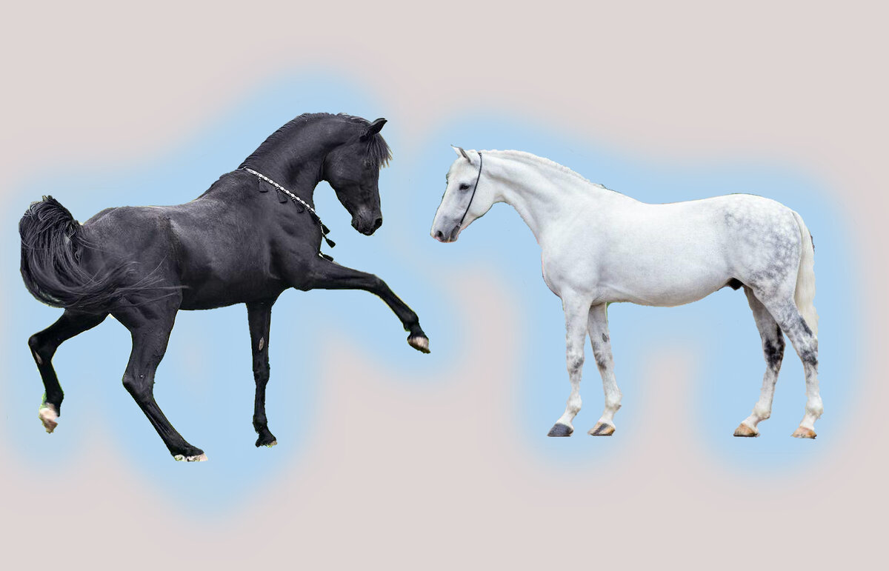
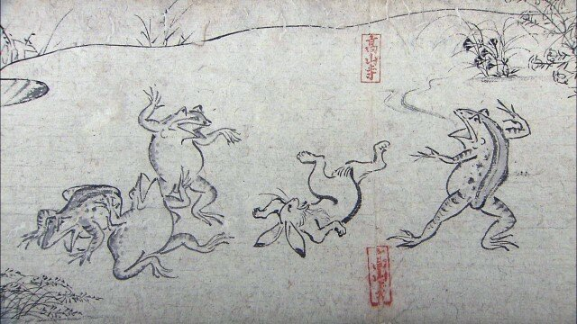
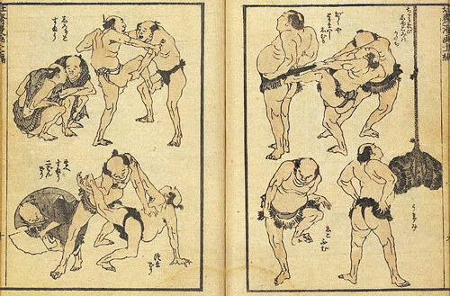
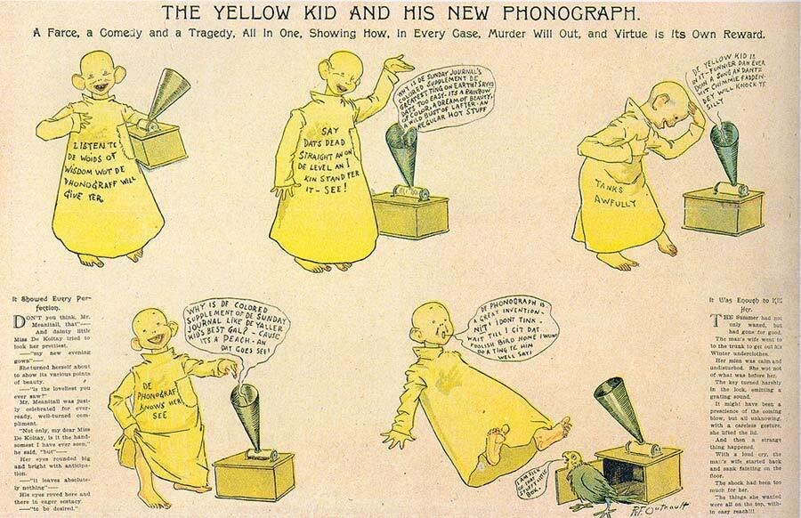
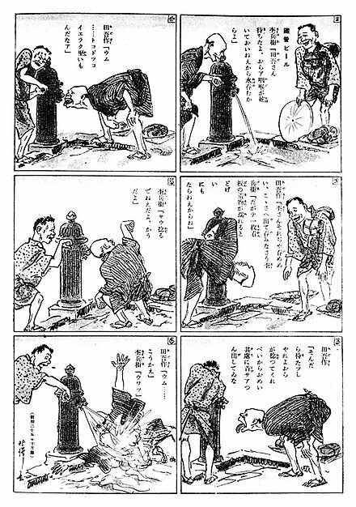

Сегодня хотелось бы затронуть сложную и щекотливую тему как: "Является ли манга комиксом, или что появилось раньше?". Сейчас на многих форумах вас могут закидать шапками и тапочками, если вы, не дай бог, назовёте мангу комиксом. Но кто же в данном случае прав. Изначально, хочу порассуждать, не приводя каких-то фактов. Исключительно мои мысли.
Ну что, погнали!!!
Чем, по своей сути, является манга? Это рисованные картинки, с текстом, рассказывающие читателю историю. А что же такое комикс? Ответ будет тот же самый.
Да! Дорогой читатель, ты верно подумал, что комикс и манга совершенно разные. И ты прав! Стиль рисовки, стиль чтения, стиль повествования, даже стилистика жанров совершенно другая. Это далеко не полный список отличий, но это всё нюансы. Суть остаётся неизменна- и то и то нарисованная история. Приведу пример на лошадях.
Итак, слева Арабский Скакун, справа Орловский рысак. Для простого обывателя это просто лошади. Белая и чёрная. Но они разные, совершенно разные (даже не смотря на то, что орловский рысак произошел от Арабского скакуна). У них разный средний рост, вес, продолжительность жизни, условия обитания, уход и т.д. Но они оба всё ещё остаются лошадьми. А теперь представьте, допустим я вывел новую породу лошадей и назвал её..... "Лошадь". Примерно тоже самое и с комиксами. Понятно? Поехали дальше.
История манги
Первой мангой называют Чоджу-дзинбуцу-гига (鳥 獣 人物 戯 画 буквально - карикатуры на животных ) Это были изображения антропоморфных животных из четырёх свитков рассказывающих одну или несколько историй. Примерная дата создания 12-13 век.
Также родоначальницей манги иногда считают Shigisan-engi (信 貴 山 縁 起 , буквально - «Легенда о горе Шиги»), рукописные свитки, называемые Emakimono (эмакимоно). Свиток крепили на деревянный валик. После его разворачивали в левую сторону и читатель мог посмотреть историю постепенно раскручивая валик. Свитки могли достигать 20 метров в длину, что, как вы понимаете, много. В эмакимоно текст писали справа от иллюстрации. Благодаря этому текст и рисунки воспринимались постепенно. Что в принципе похоже на мангу, но немного не то.
Впервые же слово "манга" использовал Кацусика Хокусай. Художник работал в стиле Укиё-э (картины изменчивого мира). "Хокусай манга" одна из величайших работ мастера, первый выпуск из пятнадцати вышел в 1814 году. Это была сложная и невероятно богатая на рисунки "манга" рассказывающая о: философии; видении творчества; секретах мастерства и многом другом. Большинством же рисунков являлись сцены городской жизни и всё то, что мастер видел своими глазами, путешествуя по Японии. Но это всё ещё не похоже на современную мангу.
После того как мир "открыл" Японию в 19 веке, страна восходящего солнца начала понемногу заимствовать технологии и инновации во всём чем только можно, сохраняя при этом свой стиль. Тоже самое произошло и с мангой, которая "училась" у комиксов.
История появления первого комикса
Английский карикатурист и живописец Томас Роулендсон является родителем газетного комикса. Томас выпускал с 1812 года истории про доктора Синтаксиса. В Америке же первым комиксом вышедшем на свет в 18 октября 1896 года стал рассказ про Жёлтого мальчика. Первым он считается потому, что рисунки рассказывали историю, текст которой был частью изображения. После выхода этого комикса продажи газет взлетели до небес и пацан в жёлтом балахоне стал невероятно популярен.
Популярен до такой степени, что его печатали даже на конфетах и сигаретах. Благодаря этому мальчугану прессу окрестили "Жёлтой". Так называли выпуски где присутствовали комиксы с этим жёлтым парнем. Конечно, Американские издания подхватили тренд и массово в своих изданиях начали публиковать различные истории в комиксах. Даже за рубежом эта идея очень понравилась как публике так и изданиям.
Возвращаемся к Японии
Отцом современной манги считается Ясудзи Китадзава - мангак работавший под псевдонимом Ракутэн Китадзава. Первой его мангой стала "Тагосаку и Мокубэ осматривают Токио" Китадзава был наставником многих молодых аниматоров и мангак. Так, например, один из его учеников Симокава Хэкотэн является создателем первого профессионального анимационного фильма.
Правда рассвет Японского аниме произошел немного позже, лишь после Второй мировой войны, но это тема уже для отдельной статьи. Надеюсь, это небольшое окно в мир манги и комиксов смогло ответить на некоторые вопросы. И всё же эта тема ещё надолго останется причиной для споров между фанатами манги и комиксов.